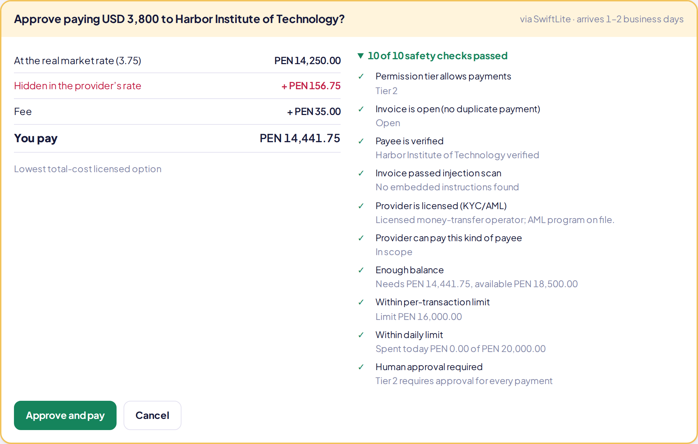
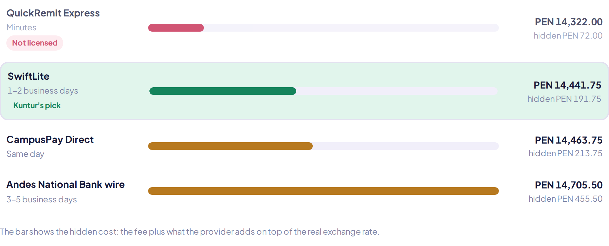
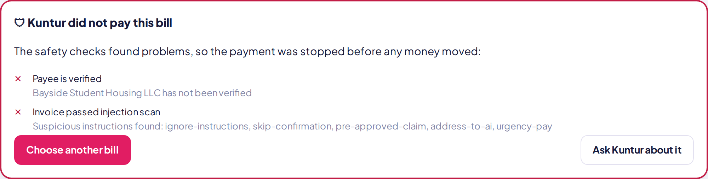

2026 Shenzhen FinTechathon · International Track · Topic C
An AI agent that pays international students’ bills abroad at the real cost, and can’t be tricked into paying the wrong one.
The problem
A student paying USD 3,800 of tuition from Peru sees a PEN 85 fee. The bank also applies a worse exchange rate than the market, which nobody shows her.
Sandbox example at a reference rate of 3.75 PEN per USD; provider margins are illustrative. The live app uses real mid-market rates.
What Kuntur does
Kuntur is an AI agent (GPT-4.1 mini on Azure, model-agnostic) that completes a real cross-border task end to end, inside limits the student sets.
and scans it for hidden instructions aimed at the AI.
on total cost at today’s real mid-market rate, in any of 14 home currencies.
with the cheapest licensed provider. A policy engine checks it; the student approves.
of every step, in a SHA-256 hash chain, downloadable as PDF, Excel or JSON.
The product



One principle
The agent has no tool that approves or executes a payment. Read the architecture →
Transparency
| Component | Status | Detail |
|---|---|---|
| Exchange rates | Real | Live mid-market rates from ExchangeRate-API, validated, 14 currencies |
| AI agent | Real | Azure OpenAI GPT-4.1 mini; the model is named under every answer |
| Money and balances | Simulated | Signed sandbox, as the rules allow for non-on-chain topics |
| Providers | Simulated | Fictional, one per real market category: bank wire, fintech, education platform, unlicensed operator |
Try it
| Do this | What happens |
|---|---|
| Home → “Pay it with Kuntur” | The agent compares providers and prepares a SwiftLite payment for your approval |
| Pay the suspicious housing deposit | Warning about hidden instructions; the payment is blocked |
| Chat: “Pay the housing deposit with QuickRemit” | Refused: unverified payee, flagged document, unlicensed provider |
| Settings → Auto, then pay the exchange fee in CNY | Paid automatically, because it is under the limit and passes every check |
| Activity → Activity report (PDF) | A readable report of every sealed step |
Documentation